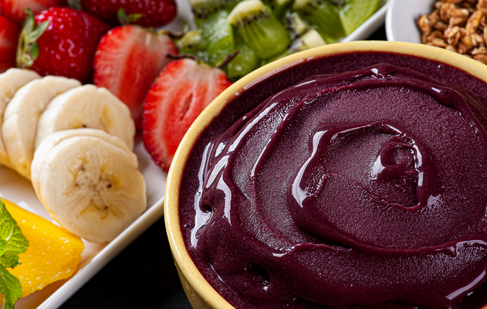
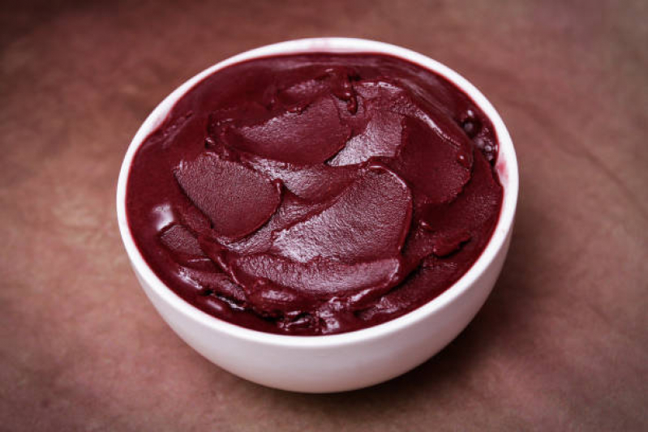

A Origem do Açaí
O açaí surgiu na região amazônica foi descoberto pelo cacique Itaki. Os povos indígenas da Amazônia usaram o açaí como fonte de energia e como um importante ingrediente em suas dietas.
Localização do Consumo
O consumo de açaí era localizado e restrito à região amazônica. No entanto, nas últimas décadas, especialmente a partir dos anos 1990, o açaí ganhou popularidade em outras partes do Brasil e até mesmo em outros países devido às suas propriedades nutritivas e ao seu sabor característico. Hoje, o açaí é consumido de diversas formas, principalmente na forma de sucos, sorvetes e cremes, sendo valorizado tanto por seu valor nutricional quanto por suas propriedades antioxidantes.
Na região norte, é uma tradição consumi-lo com tapioca, farinha de mandioca e como pirão para acompanhar um peixe assado ou camarão. E bastante consumido também pelos usuários de academia ou pessoas que buscam alimentos ricos em fibras, proteínas, vitaminas e minerais para acrescentar em sua alimentação.
Produção/Tipos
A maior parte da produção de açaí está concentrada no Pará e no Amazonas, que respondem por 87,5% do total produzido no país.
O consumo de açaí pode variar de região para região, por exemplo:
- Açaí na Tigela (Açaí Bowl): É a forma mais tradicional de consumo, onde o açaí é batido com água ou leite e servido gelado, geralmente acompanhado de frutas, granola, e pode ser adoçado com mel ou açúcar.
 - Açaí Puro: Algumas vezes, o açaí é consumido sem adição de outros ingredientes, servido em sua forma pura e gelada.
 - Açaí com Granola: Uma forma comum de consumir é misturar o açaí com granola, às vezes acompanhado de banana e outros complementos.

- Açaí na Forma de Sorvete ou Creme: Em algumas regiões, o açaí é servido como sorvete ou creme, geralmente adoçado e com textura mais cremosa.
Países
- Estados Unidos: O açaí é popular principalmente na forma de açaí na tigela, frequentemente encontrado em cafés e casas especializadas em smoothies e alimentação saudável.
- Europa: Também é consumido principalmente como açaí na tigela, muitas vezes em locais focados em alimentação saudável e veganismo.
- Japão: O açaí ganhou popularidade e é frequentemente consumido como açaí na tigela, muitas vezes com uma apresentação estética e cuidadosa.